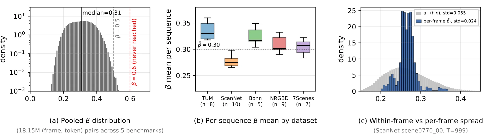
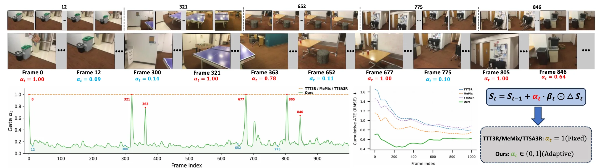
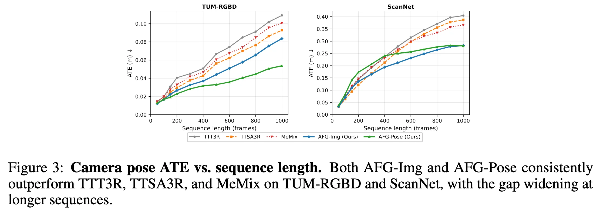
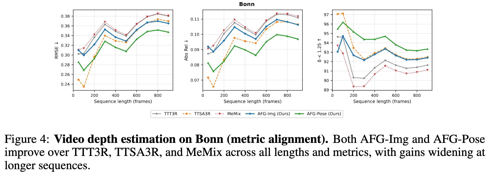
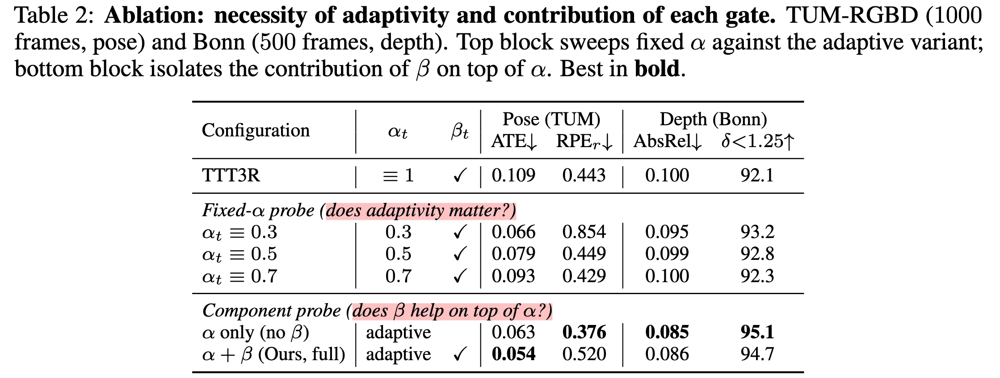
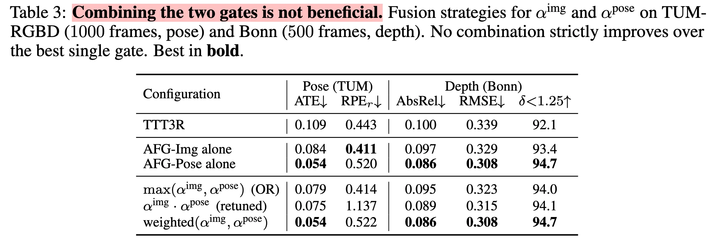

Rethinking the State Update Gate for Long-Sequence Recurrent 3D Reconstruction
不是 memory 不够用，是写入的准入机制太粗糙
目前的 CUT3R-style （cut3r, ttt3r, memix, ttsa3r 等）状态更新缺少 frame-level adaptivity，不管什么观测进来都是压缩到固定大小的 recurrent state 里，TTT3R 虽然有了 per-token gates 但是这个 gate 的大小范围非常有限，median 约为 0.31，从不超过 0.6，且每帧几乎不怎么变化，导致每个state token 的有效记忆跨度只有三帧左右。
[!tip] 核心观点 1. redundant frame overwrite：视频流中大量的相邻帧都提供的是近似重复的局部几何，传统的 state update 把这些冗余信息基本上以一样的强度反复书写了，反而把早期有价值的 keyframe evidence 给冲掉了。 2. token-level gate 和 frame-level novelty 不一样，TTT3R 只是能告诉哪个state 的 token 应该被当前帧影响，但是并不能判断这个帧本身是不是应该写进去。 3. 经典的 SLAM 依赖关键帧选择避免长序列的漂移，但是 streaming feedforward reconstruction 在追求端到端和 constant memory 时，把这一机制弱化成了所有帧连续写入，导致 state memory 变成一个没有准入制度的缓冲池。
TTT3R
如上图，TTT3R 认为 state update 是 TTT 中的一步参数更新， state St 认为是在线优化的参数，当前帧 It 类似测试样本，更新残差 ΔSt 类似自监督重建损失的下降方向。但问题在于：每一帧都产生一次“梯度下降”，长视频中就会被大量的冗余信息覆盖掉之前的关键信息，虽然 per-token gate βt, m 能抑制掉一部分 token-level 的冗余写入，但是只要每帧平均写入的强度都近似固定，那 memory 还是会被冗余信息无差别挤掉&刷新。

上图是 TTT3R 的写入强度示意图，β 基本上就在 0.15 到 0.5之间，甚至集中在 0.2 - 0.4。并且从第二图能看出来，哪怕这个运动在0.15 到 0.5之间，但按数据集对每个序列的β均值进行分组，尽管运动模式多样，所有五个基准测试的均值均落在[0.27, 0.34]区间内。
Method

可以看到，αt 会根据帧间变化量（这一帧是 key-frame 还是相邻帧的冗余），自适应地调整自己的大小，从而决定对于 recurrent state 的更新力度。
数据流
本文状态门控的本质：βt 决定写到哪些 token 里；αt 决定这一帧整体写多强。相当于是一个二维 gate，一个控制空间选择（到哪些token），一个控制时间选择（这帧给多大权重）。
RGB stream:
I_1, I_2, ..., I_t, ...
per-frame encoding:
I_t
└── Encoder
├── patch/image tokens X_t
└── global feature g_t
recurrent interaction:
previous state S_{t-1}
+ image tokens X_t
└── dual-stream decoder / cross-attention
├── update residual ΔS_t
├── pose/depth/pointmap readout
└── pose representation p_t
## 主要的内容在这里
gate estimation:
g_t or p_t compared with g_{t-1} or p_{t-1}
└── frame novelty d_t
└── scalar frame gate α_t
state write:
TTT3R per-token gate β_t
+ AFG frame gate α_t
└── S_t = S_{t-1} + α_t β_t ⊙ ΔS_tCUT3R 与 TTT3R 数学基础
设输入视频流为 {It}t = 1T，Online 3DR 在 t 时刻仅依赖历史 {Ii}i ≤ t 和固定大小状态 St − 1，预测相机位姿 Tt ∈ SE(3)、内参 Kt、深度图 Dt 或点图 Pt ∈ ℝH × W × 3。feedforward 形式为： Xt = Eθ(It), (ΔSt,Zt) = Fθ(St − 1,Xt), (T̂t,K̂t,D̂t,P̂t) = Hθ(Zt,St − 1,Xt),
其中 Eθ 是 image encoder，Fθ 是 state-image interaction decoder，Hθ 是几何 readout head，Zt 是当前帧与状态交互后的中间 tokens。
朴素的 CUT3R-style continuous update 可写成 St = St − 1 + ΔSt，表示每一帧都把自己的残差几何证据完整写入长期状态。 但问题在于，如果 ΔSt 来自冗余帧，那它不提供新几何，却会改变 state；如果 ΔSt 来自有噪声帧，那它会污染 state；如果长时间持续写入小残差，那 state 会发生累积漂移。
TTT3R-style gate 把状态更新解释为 TTT step，并引入 per-token learning rate / gate。令 M 为 state token 数，ΔSt, m 是第 m 个 state token 的 residual，则： St, m = St − 1, m + βt, mΔSt, m, m = 1, …, M. 把 decoder 产生的候选状态写成 S̃t, m = St − 1, m + ΔSt, m，就能等价写成 EMA 形式： St, m = (1−βt, m)St − 1, m + βt, mS̃t, m.
其中 βt, m ∈ (0,1) 表示当前帧对第 m 个状态槽的写入强度。βt, m 通常由 state token 对 image tokens 的 cross-attention 统计得到。设第 ℓ 层、第 h 个 head 中，第 m 个 state token 对第 n 个 image token 的 cross-attention logit 为 at, m, n(ℓ,h)，则一种抽象形式为：
$$ \bar{a}_{t,m} = \frac{1}{LHN} \sum_{\ell=1}^{L} \sum_{h=1}^{H} \sum_{n=1}^{N} a^{(\ell,h)}_{t,m,n}, $$
βt, m = σ(āt, m),
其中 L 是 decoder 层数，H 是 attention heads 数，N 是 image tokens 数，σ(⋅) 是 logistic sigmoid。该式揭示了论文诊断出的结构瓶颈：āt, m 是跨 layer、head、spatial token 的大规模平均，frame-specific 的几何变化会被平均过程稀释。假设 āt, m 的分布集中在一个窄区间，那么 βt, m 自然也集中在一个窄区间；这解释了为什么 β 的 median 约为 0.31，且 frame-to-frame variation 很小。
记忆跨度分析
再分析记忆跨度(memory horizon)。忽略 token index，并假设平均写入强度（遗忘率）为常数 β̄，则 EMA 展开为：St = (1−β̄)St − 1 + β̄S̃t，递推展开得到：$S_t=(1-\bar{\beta})^t S_0+\sum_{i=1}^{t}\bar{\beta}(1-\bar{\beta})^{t-i}\tilde{S}_i$。因此，第 i 帧候选状态 S̃i 对当前状态 St 的贡献权重为：wi → t = β̄(1−β̄)t − i 。
定义有效记忆跨度 Heff 为当历史信息的贡献衰减到初始值的 e−1 ≈ 0.368（约剩下 37%）时，对应的时间间隔。令 (1−β̄)Heff = e−1，可得 Heff = − 1/log (1−β̄)。
由于实际中 β̄ 通常比较小，可以利用泰勒展开 log (1−β̄) ≈ − β̄。那也就有：Heff ≈ 1/β̄ 再代入 β̄ ≈ 0.31 得 $H_{\mathrm{eff}}\approx\frac{1}{0.31}\approx3.23$。
这就是文中说 TTT3R 约 3 帧记忆跨度的来源。更重要的问题是所有帧都同等短命，写入强度也差不多。。关键帧、不确定帧、冗余帧、loop revisit 帧、运动剧烈帧，在 frame-level 都被近似等强度写入，导致 state 既短视又不加区分。
[!hot] 通过用 Heff 将抽象的 gate 参数转换成了一个更直观的指标，用来衡量 TTT3R 实际能够记住多长历史。
提出了两种 frame gate 实例： 1. AFG-Img，使用 encoder global image feature。 2. AFG-Pose，使用 decoder pose representation。
[!tip] 二者的本质都是把经典 SLAM 中的 binary keyframe admission：𝟙[dt>τ]，连续松弛为：$\alpha_t=\sigma\left(\frac{d_t-\tau}{\eta}\right)$。其中， - τ 是 novelty threshold，控制什么程度的帧间变化才被视为值得写入 - η 是 temperature，控制从“少写”到“全写”的过渡陡峭程度 这样不完全跳过某帧，允许每一帧以不同强度贡献 residual。
为什么这样就做到了保留更长记忆的能力？
从信息流看，历史 evidence 的保留权重为：$R_{i\rightarrow t,m}=\prod_{j=i+1}^{t}\left(1\alpha_j\beta_{j,m}\right)$。所以第 i 帧写入的候选状态对第 t 帧的残余影响就是： $$ W_{i\rightarrow t,m} = \alpha_i\beta_{i,m} \prod_{j=i+1}^{t} \left( 1-\alpha_j\beta_{j,m} \right). $$
TTT3R 中 αj = 1，如果 βj, m ≈ 0.31，那么 Wi → t, m 快速衰减；AFG 中大量冗余帧有 αj ≪ 1，就有 1 − αjβj, m ≈ 1。
早期关键证据不会被冗余帧快速冲掉。只有当真正的新证据出现时，αj 才变大，状态才被有效刷新。
[!danger] 和我们 omega-map 的不同之处 它是选择当前 frame 是否有资格改写，有多大资格改写 memory； omega-map 想做：memory 影响当前 frame 的 map 以及 memory 写入，对于不确定的先放放，不好的拒绝，好的接受。
- GHOST 决定 cache 中哪些 token 被 evict；
- RetrieveVGGT 决定历史哪些 frame 被 retrieve；
- AFG 决定当前帧对 persistent state 的写入强度。
Experiments
- AFG-Pose 适用于动态和快速运动的场景（如 TUM-RGBD、KITTI、Bonn）
- AFG-Img 适用于平滑的室内扫描场景（如 ScanNet、7-Scenes、NRGBD）




Limitations
（1）αt 是标量 gate，并且是 frame-level ，表达能力有限。可以变化： - region-level，区分一帧内部的局部区域并影响 αt 大小； - token 级别 gate，表达力更强；
（2）只控制写 state，不涉及读。如果要特定的远期历史，那 AFG 就不能像 retrieval memory 一样精确取回某个历史视角。所以无法替代 explicit retrieval / KV cache / loop closure。
write = frame / region novelty + token 相关性 + 不确定性
启发： - 长序列几何记忆的核心不仅是堆记忆，还要让不同证据以不同准入强度、不同时间尺度、不同安全边界进入 memory； - write = frame / region novelty + token 相关性 + 不确定性； - memory horizon （记忆跨度），这是第一次见到，可以把这个作为一种能力对比指标乃至设计对象。 - 尺度、全局几何等基础证据可以采用极长的 horizon，确保长序列中不会因反复更新而漂移； - 相机运动可以采用中等 horizon，以兼顾连续性和快速适应； - 纹理、光照以及动态物体等易变化信息则采用较短 horizon，避免短暂观测长期污染状态。